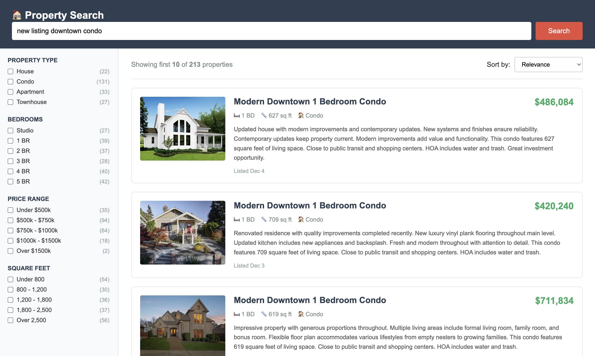
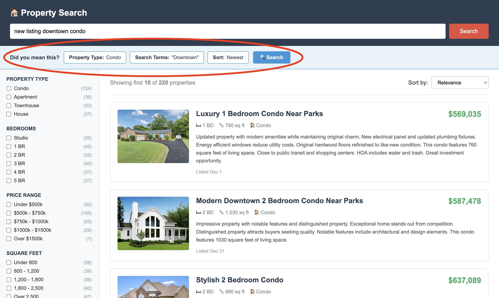
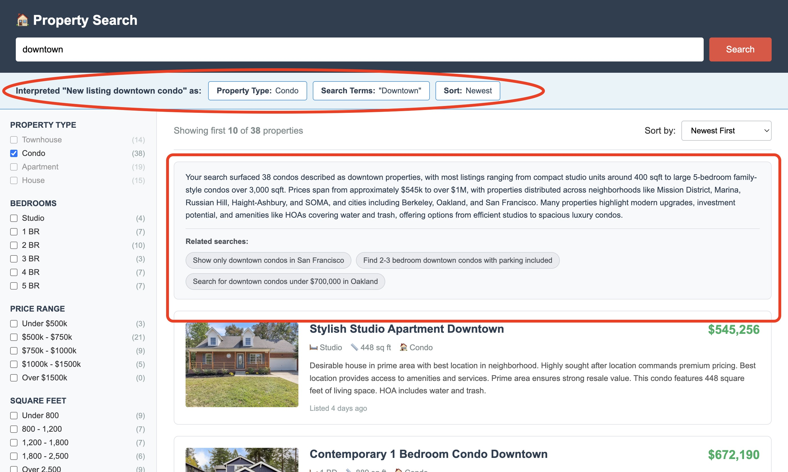
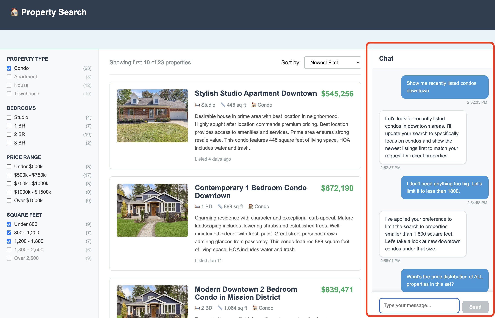

Incremental AI Adoption for E-commerce
When you think of e-commerce, your mind is probably drawn to Amazon.com as "the definitive" example. But it's actually the exception. The internet is filled with tons of small- and medium-sized e-commerce sites. These sites typically follow the same pattern - a search page with a search box at the top, selectable filters along the left side, and results filling the remainder of the screen. And the whole goal is to quickly usher customers to the products they seek.
For most of these sites, the implementation is quite simple. Product metadata is indexed into a search engine such as Elasticsearch or Algolia. This includes fields like the title of the product, its description, its price, and other relevant features (sizes for shoes, square feet for houses, etc.) And the application is typically quite simple – the user submits a search, and the backend issues a query that hopefully captures the customers intent, and then captures the responses and sends them to the frontend for display in the search results.
Unfortunately "right-out-of-the-box" search results are often not that great, and fixing the problem often requires hiring a team of search experts – something that smaller shops are unable to afford. Fortunately, modern AI is coming to the rescue! In this post we'll demonstrate how e-commerce shops can incrementally adopt AI and explore improvements in search which would have been unbelievable just 5 years ago.

Want to see it in action?
Not in the mood for reading? Watch the video version where I walk through the entire progression with live demos:
Or jump straight to the live demo to try it yourself: CLICK HERE
Dispelling the Magic of RAG and Agentic AI
In 2024 "RAG" – Retrieval-Augmented Generation – became a very popular application of AI. It was sold to us as magic – just plug in RAG and point it at a set of documents and then you would instantly have a world-class agentic search application – like... "poof"! But the problem was that RAG was a black box component, and if something went wrong, then it was nigh impossible to identify the problem and fix it.
In another post I make black-box RAG transparent. I explain how it's really a set of pipelines – one for indexing content, and another for retrieving it – For the sake of this post you just need to know that RAG isn't anything special; it's just a call to an LLM which has access to a well-described product search tool that is backed by any form of search including "old school" lexical search.
2025 was "the year of Agentic AI". This was also amazingly overblown. No one could agree even on the definition of "agentic" at first, and when all the dust settled by the end of the year, we found out that Agentic AI was really, literally, just a couple of for-loops. The inner for-loop wrapped the LLM call and allowed "the agent" to make multiple sequential tool calls, learn from the responses, and continue until it had the results it needed. The outer for-loop incorporated the user input so that the agent actually acted like an AI Assistant, responding to the user's course corrections.
But the big point for this post is that nothing is magical. A request to Gen AI is just an HTML request – text in, text out. Build an agent by wrapping that with a couple of for-loops. And make the agent a RAG agent by giving it your current search endpoint as a tool. Easy-peasy!
Morphing Traditional Search into Modern AI Search
Now let's see what this looks like from your customer's perspective. I'll walk through four levels of AI adoption, each building on the previous.
Level 0: Traditional Search (Your Current Reality)
Most e-commerce sites today look like this:

You've got a keyword search box at the top, a sidebar full of filters, and the remaining space for the search results. The burden is entirely on the user to understand the typical terminology used in the documents, learn what filters exist and how they work, and sort the results correctly.
The reality? Most users type a query, scan the first page, and leave if nothing looks right; "Their search doesn't understand me." Users don't explore filters and often type text in the search box which really should be a selected filter. For instance, in a home search, they might say "4BR" or "Under $750K" instead of selecting the right filters.
Unless you've hired that top-notch machine learning team, queries like these aren't parlayed into the relevant results. You're probably seeing lots of confused usage patterns and correspondingly high bounce rates. Unfortunately, this is just par for the course for most traditional e-commerce applications.
Level 1: Beginner AI (Test the Waters)
Let's take a baby step. In this step, we basically keep traditional search unchanged, but add only a small suggestion bar that appears after results load.

The AI interprets the user's natural language query and suggests a search that takes better advantage of filters and sorting, for example "Did you mean this? Property Type: Condo, Search Terms: 'Downtown'". Users can click to apply these suggestions or ignore them completely.
Implementing this is quite easy – simply define a search tool that has well-specified arguments associated with the keyword search text, facet selections, and sorting. Then, whenever a user issues a search, you asynchronously send the request to this simple "agent" and instruct it to make the best search it can based upon the users' input. One great thing about the agent, is that it will automatically recover from misspellings and odd terminology. You can improve upon this further when writing the prompt: include examples and explanations so that the agent has an understanding of the vocabulary used in the products and the options available for the facets.
Notice that this baby step is effectively risk-free for the user experience – the search app works no differently from what they are used to in the traditional app above. There is no extra latency incurred because the AI request is asynchronous. And the only concession we've made is about 50 pixels of vertical real estate on the screen.
At this point you should be gathering data about your users' experiences. Track every time that the user is exposed to the "did you mean" text, track how often they click the associated search button, and track how often they convert. If the click-through and conversion are an improvement over the traditional search, then your users are resonating! Time for the next step.
Level 2: Intermediate AI (Let AI Take the Wheel)
The easy and obvious next step is to let the AI actually execute the recommended search rather than waiting for their approval. See how we've replaced the "did you mean" text with "interpreted as" in the image below.

At this point you are incurring some real UX risk, because the snappy 10ms response your customers have become used to is now being replaced by a response that could take 2 or 3 seconds. As an old-school search engineer myself, this makes the sweat bead on my brow because "you must never let latency increase". But, if it takes your user 5 seconds to come up with a good query, and the AI can come up with that good query in two seconds, then we are actually saving the user some effort. What's more, the user's first query is never good, so they will either query multiple times to get what they want, or they will succumb to cognitive overload and abandon search. AI is saving them a lot of effort.
Notice one more change in the intermediate AI experience. We have added a new box just above the results which contains a summary of the results and some recommended next queries. The summary gives the user a holistic understanding of the search results, saving them from having to look through the results if they aren't quite what was expected; and the recommended next queries keep the user engaged with search, so that rather than abandoning, they might get new ideas for related content.
As always, it's important to measure everything in order to understand what is working and what isn't. A/B test the beginner and intermediate experiences. Does automatic query rewriting lead to better or worse conversion? Are users engaging with the recommended next queries? If so... on to the advanced AI experience.
Level 3: Advanced AI (Full Conversational Assistant)
Notice, during the intermediate AI phase, that in generating a summary of the results and recommended future queries, the AI is effectively having a conversation with the user. The only problem is that it's stateless, and it's one-sided – Issue a new query and the agent forgets all about the previous one. Does the user want to redirect the agent? They're out of luck.

With the advanced AI experience, we morph the traditional search experience into a guided, conversational experience. In this example, we ditch the search box, and replace it with a chat window on the right side of the screen.
I'm a huge proponent of conversational UX. Why? Because it was the first UX – humans have been having conversations for 50 thousand years! It's only been in the last 30 or so years when clicking glowing rectangles has become the default UI/UX – and in my opinion, we only did this to address a technical limitation – machines didn't talk until just recently!
When user's start interacting conversationally with your e-commerce app, you'll witness a Cambrian explosion of new user behaviors. For one thing, they will start leaning into the intuition of the model. Rather than taking time to type in "3-4 bedroom house over 2500sq ft" maybe they'll just say "Show me some big ass houses!" (why not?). The agent (now, really the "assistant") will attempt to map the user's wishes into a query.
In traditional search, we only have the text from the keyword search box, and identifying user intent often requires your search application to be psychic (hint... it's not). But now since the conversation is stateful, magic happens. The user works with the assistant to clarify their intent, and the resulting queries are much better targeted, leading to much higher conversion rates.
The assistant has also gained some other superpowers. Rather than just pasting results on the screen, the assistant can talk about the results. The user can ask "which one of these are more modern style?" The user can ask for simple aggregate analyses over the results: "what is the typical price distribution for houses of this size?". Leaning further into the assistants common-sense understanding the inventory, the user's intent, and the world at large, the user can brainstorm with the agent about future searches. Finally – maybe this is level 4 – you can make the agent perform asynchronous research on behalf of the user and really dig through the inventory once it feels like it has a good understanding of the user's needs.
Regarding product measurement: traditional metrics still matter (conversion rates, A/B testing), but since conversations can drift into many domains, use LLMs to analyze collected conversations and map out typical user journeys. You're going to learn a lot more about your customers than you ever did just talking with them through the keyword search box!
Easier Than You Think
The entire demo you just saw – including the whole, fake traditional search and fake inventory – took me 10 hours to build (ain't vibe-coding amazing?!). If you are interested in incrementally adopting AI, then nothing much has to change. Your existing search infrastructure (Elasticsearch, etc.) stays in place. All you have to do is write a thin, completely decoupled endpoint that looks at the user request, and attempts to map that into a proper search request (again... using your current system), and you incorporate that into the UI. If that works out to your expectations, then just make the integration thicker, bit-by-bit.
Are the results really effective? Yes! Just take my app for a spin yourself and see. CLICK HERE. After the page loads (first load might takes a few seconds) make sure to play with the demo controls at the top which let you try out each phase of AI integration. Start with traditional search, load some of the example queries, and then notice how the queries are interpreted, then move on to the more advanced AI integrations.
Or, for e-commerce businesses, if you really want the "easy" button to speed you down your AI roadmap, then let's chat. I can help you navigate from traditional search to conversational AI experiences with minimal the risk or complexity.
The future of e-commerce search is conversational, and getting there is simpler than ever.
Hey, and if you liked this post, then maybe we should be friends!
- I just wrote a book about Prompt Engineering for LLM Applications, which has now been published in 6 languages! Maybe you'd be interested in reading it.
- Are you stumped on a problem with your own LLM application? Let me hear about it.
- I'm going to write lots more posts. Subscribe and you'll be the first to know.